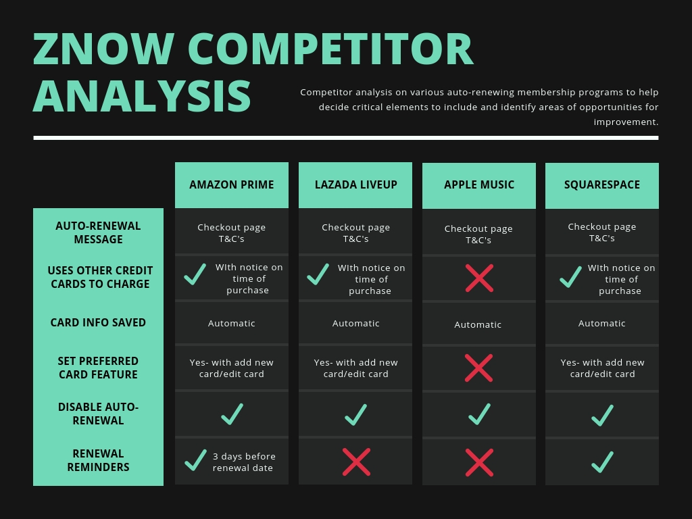
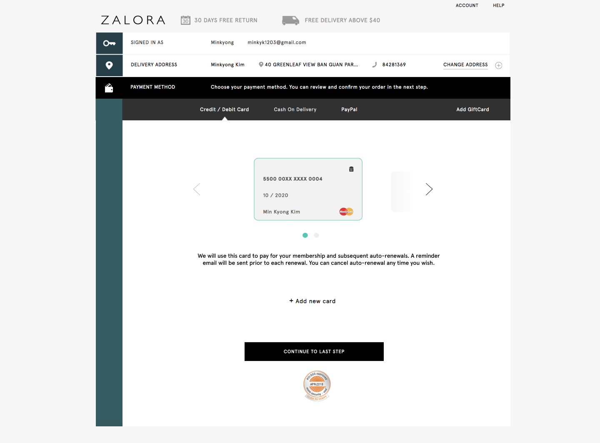
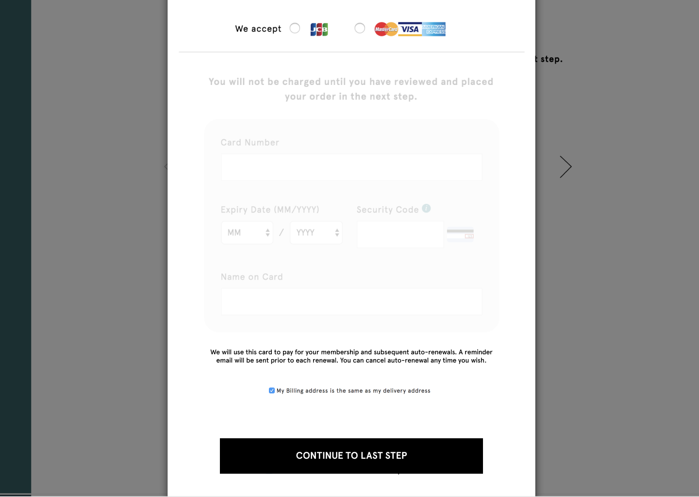
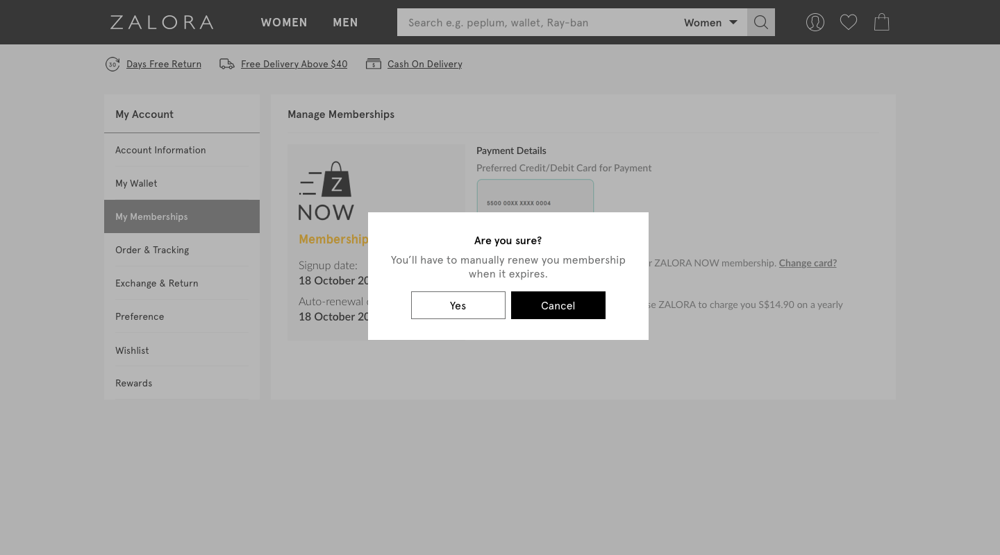

ZALORA Group is a online fashion e-commerce company based in Singapore as well as a presence throughout Southeast Asia - in Malaysia, Indonesia, Philippines, Hong Kong, and Taiwan. ZALORA offers both a wide range of international and local brands in addition to its in-house labels for mens and womens' apparel, shoes, and accessories. ZALORA is a part of Global Fashion Group, which operates e-commerce fashion sites in emerging markets.
While there, I spent most of my time working on conceptualizing and designing for ZALORA's automatically renewing subscription program ZALORA NOW (ZNOW), which provides its customers free shipping for a fixed annual fee. I will dedicate this page solely to the project.
UX Design Intern
May - September 2018
Interviews, surveys, usability testing, affinity diagramming, wireframing/prototyping, competitive analysis, stakeholder management
Figma, Sketch, inVision
Desktop, Web Mobile, App
As a one-year free express shipping subscription program, ZALORA NOW had allowed members to receive free shipping service with one-time payment of S$14.90. However, upon expiry of the program, customers needed to repurchase their membership manually. Since this can potentially hinder retainment of ZNOW members, ZALORA sought to change its subscription program to an automatically recurring one where customers would be charged the payment method used to initially purchase the program to retain their membership.
In order to better define the scope of the project, I first worked closely with the product manager for ZNOW, my primary stakeholder, to establish some of the basic requirements.
One major constraint we were aware of from the start was that this feature would only work easily for credit/debit card and Paypal purchases (out of the three payment methods including cash-on-delivery), as we need to store some type of payment information in order to recurringly charge customers.
Another was that a integral goal of this feature was to make the relevant modifications and enhancements needed for an user-friendly recurring membership purchase and post-purchase experience. Put differently, it was critical not to disrupt the existing flow, but to build on top of it with affordances to accomodate this change.
With this in mind, we examined data to check if credit card purchases for ZNOW account for a considerable portion of ZNOW purchases in Singapore (SG), Malaysia (MY), and eventually Philippines (PH) - the only countries available for ZNOW.
We found that 82% and 48% of ZNOW purchases in SG and MY respectively came from credit/debit cards, and just 15% and 6% came from Paypal. Though we could technically implement the feature for Paypal, the percentage share of Paypal was too small for both countries and agreed to leave out Paypal for the iteration at the time. We decided to focus on designing for current ZNOW members who had paid for their initial membership with a credit/debit card in SG and MY.
To further my understanding of some conventional user journeys for recurring subscriptions, I conducted a competitor analysis specifically examining when, where, and how information about auto-renewals are communicated.
Lastly, we targeted both current members and non-members. One of our key goals was to particularly design in such a way that non-members would be "enticed" to purchase the membership, while smoothly transitioning current members into an auto-renewing program. Because goals and user flows were different for each group, we needed to distinguish various use cases apart by user group to help create designs. Combined with competitive analysis, we decided that the following flow and features for each user group.
In order to further learn more about how secondary stakeholders felt about these requirements, I discussed these flows with the three secondary stakeholders involved in this project: legal, marketing, and UI. Some of the questions I asked included:
When and how do we need to communicate the message about auto-renewals to the customers?
When should we send reminder emails about expiring memberships and how should we construct the email?
How should we craft and cater emails to customers who decide not to purchase with a credit card or disable auto-renew during their membership period?
What banners onsite need to be edited to reflect this change?
How can we leverage the membership module as a space to advertise ZNOW to non-members?
Based on feedback from teams, we refined the initial legal requirement as follows:
Customers should be notified early in the user flow that 1) they will be charged on multiple cards, and 2) that they can always disable the auto-renew toggle under "My Memberships"
There will always be customers who fail to view their reminder emails and make decisions in time. We should therefore accomodate by creating designs that clearly communicate the option of disabling auto-renew any time they wish in the purchase flow.
Due to tight deadlines and stakeholder expectations, a lo-fi prototype was not developed. Instead, Figma was used to build one from the start and quickly presented to stakeholders. In an ideal scenario, however, we would have formally tested this on our end-users as well for the usability of this section of the website.
In terms of the checkout flow, we received feedback that the current flow did not clearly communicate that whichever credit card used for first purchasing the membership could be changed for subsequent renewals by going to their memberships module. For example, though we did include this in the message shown in the 'review order' (the last) section of checkout, we did not in the 'payment method' section, where we had removed the 'remember card details' toggle. Because the current checkout structure was configured in a way that each section collapsed and expanded progressively when clicked on, we needed to make sure this message was visible at every step.
It was also unclear in the current design that customers, either those who had chosen to disable mid-cycle or those who were simply not opted in having paid with a non-credit card method, could enable auto-renew again. There was no clear display indicating this affordance, as once disabled, the toggle was just greyed out. This was a crucial issue as this could be potentially confusing for some customers who are less tech savvy.
In addition, a confirmation message for disabling auto-renew was missing. Creating one was critical for error prevention.
It was initially planned that the module would be unavailable for non-members. Yet, this would provide an inconsistent experience for customers. One of our key goals was to also entice them as much to join ZNOW and figured that creating a version tailored to non-members could help achieve that.
No major issues were raised by stakeholders regarding the enhanced "add card" functionality in My Wallet.
To make sure users understood which card they would be charged for auto-renewals and the option to configure this setting, we included the same message in the 'review order' of checkout in Payment Method, which is when customers are selecting/adding the card to pay with. We put this message right below the card to make it more contextually relevant and draw the users' attention.
 Another issue addressed was that there was a possible edge case of users adding the ZNOW sku from the review order section when asked to specify their delivery option, instead of already having it in their cart prior to checking out. As a result, we made sure that when the sku was added at this point, they would also see the relevant disclaimer.
The text below the auto-renew checkbox in red now is more relevant and clearly explains how the toggle functions and what the consequences of enabling/disabling are.
A confirmation message when the user tries to disable auto-renew.
Making the space more meaningful for non-members:
Rather than conceptualizing the module merely as a place for members to manage their membership settings, the UI designer and I decided to create a module for non-members which highlights the various benefits of ZNOW and including a "Join Now" CTA.
Involve stakeholders early in the process
Most of the iterations from this project were based on lack of adequate communication with stakeholders and aligning expectations. I learned that frequent and transparent communication is key to be more thoughtful in making decision decisions.
When redesigning something, start by mapping out the existing flow and identifying which areas would be affected by the redesign
Introducing a new feature of this scale and complexity was probably one of the most challenging aspects about this project. It was extremely important to familiarize myself with the existing designs and flow of the membership purchase process in order to make sure that anything I redesigned would not disrupt the status quo for users.
{kind=link}
{kind=link}
{kind=link}
{kind=link}
{kind=link}
{kind=link}
{kind=link}
{kind=link}
{kind=link}
{kind=link}
{kind=link}